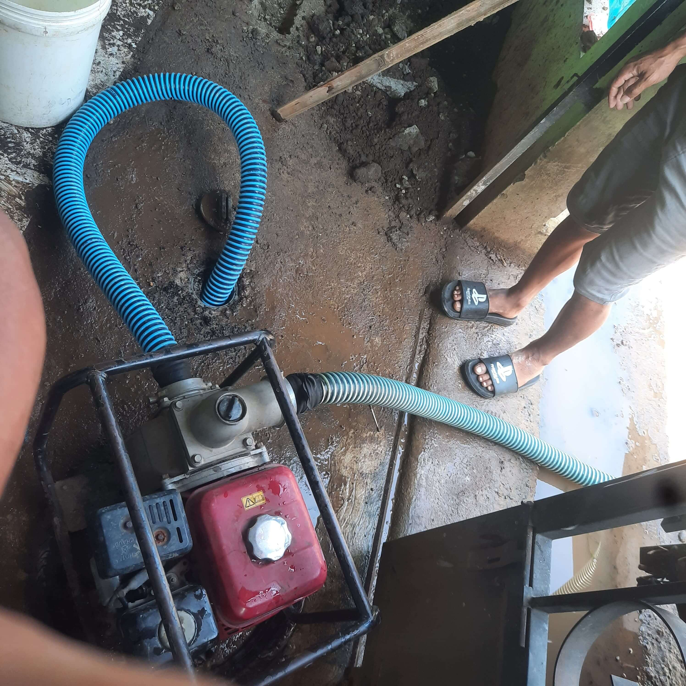

Layanan Kami
- Sedot WC
- Service WC Mampet
- Perbaikan Saluran Air dan Septic Tank
- Wastafel Mampet
- Layanan 24 Jam
Order Sekarang
 WhatsApp Admin 1
WhatsApp Admin 2
WhatsApp Admin 1
WhatsApp Admin 2
Testimoni Pelanggan
"Layanan cepat, pegawai ramah."
"Harga terjangkau dan hasil bersih."
Armada Operasional


Artikel Terbaru
Info Kontak
üìç Alamat: Jl. Klipah, Desa Kedungrandu, Patikraja, Banyumas
üìû WhatsApp: +62 838-6142-0051
üìû WhatsApp: +62 831-9523-4370
üì¶ Area Layanan: Banyumas, Purbalingga, Cilacap, Kebumen, Banjarnegara
üìà Lihat di Google Maps